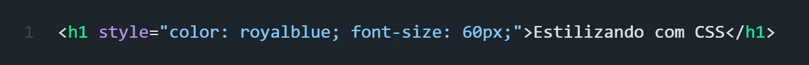

Estilizando com CSS
Sites impressionantes não exibem apenas imagens, links e texto; eles também têm estilo.
Agora, passaremos a criar sites de ótima aparência com a ajuda de uma linguagem de estilo chamada CSS.
Para adicionar estilo a um elemento HTML, comece com o "style" atributo.
Como style é um atributo, precisaremos do = sinal e das aspas "" para atribuir um valor a ele.
Se quisermos definir um estilo, por exemplo, cor, usamos color: royalblue; como valor.
Exemplo:

Personalizamos o h1 da página com o royalblue utilizando style como atributo e color como valor.
Quando adicionamos algo como color: royalblue;, estamos adicionando uma declaração.
As declarações são CSS, não HTML.
Uma declaração é feita de uma propriedade, como color, e um valor, como royalblue.
A propriedade vem sempre em primeiro lugar.
Adicionamos : entre a propriedade e o valor e ; no final de uma declaração.
Existem muitas propriedades CSS. Por exemplo, para alterar a cor de um elemento, usamos background-color e definimos um valor como royalblue.
Podemos adicionar quantas propriedades quisermos, desde que terminemos cada uma com um ponto e vírgula, ; .
Uma das partes mais importantes de um site é o texto. Podemos modificar o texto de várias maneiras, desde o tamanho até o estilo ou a espessura.
Para alterar o tamanho do texto, usamos a propriedade font-size.
Medimos elementos em uma página da web com pixels. Para especificar um tamanho, adicionamos um número.
Exemplo:

Personalizamos o h1 da página com o font-size aumentando seu tamanho.
Para definir o tipo de fonte de um elemento, comece adicionando a font-family propriedade.
Existem todos os tipos de valores possíveis para font-family, de "Times New Roman" a "Helvetica".
Para colocar em itálico o texto de um elemento, usamos a propriedade font-style e definimos o valor como "italic".
Para colocar em negrito o texto de um elemento, usamos a propriedade font-weight e definimos o valor como "bold".